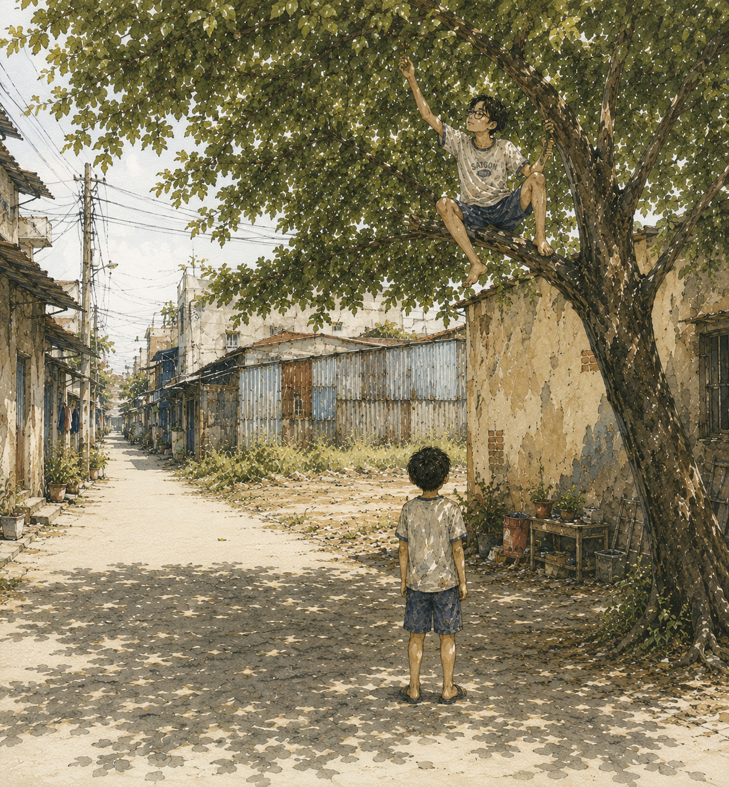

Nhà tớ dọn tới xóm này hè năm tớ lên lớp 4. Ba tớ đi bộ đội, được người ta chia cho một suất nhà, thế là đi.
Tớ không nhớ hôm dọn nhà. Không nhớ chở đồ bằng gì, ai khiêng cái tủ, mẹ tớ nói câu gì lúc bước vào cửa. Cái đó mất hẳn, moi kiểu gì cũng không ra. Thứ còn lại chỉ là một cục buồn nằm chình ình trong ngực, buồn tới mức bây giờ nhớ lại tớ vẫn thấy nó nặng.
Tớ bỏ lại cả một đám bạn ở khu tập thể cũ.
Cậu để ý cái tuổi đó chưa? Tám chín tuổi, thế giới của mình chỉ rộng bằng chỗ mình đứng. Chuyển đi năm cây số cũng như bị bứng qua bên kia trái đất. Người lớn thì đóng thùng, dán băng keo, tính toán chuyện gì đó ở đâu đó — còn tớ ngồi trên cái ghế nhựa giữa đống đồ, hiểu rất rõ một chuyện: tớ vừa mất hết bạn, và không ai trong nhà này coi đó là chuyện lớn.
Mẹ tớ hồi đó nghỉ làm, ở nhà may vá. Tiếng máy may chạy suốt buổi, rẹt rẹt rẹt, dừng, rồi lại rẹt rẹt. Tớ quanh quẩn trong sân, cái sân nhỏ trồng tigon, chán thì đá banh.
Đá banh một mình.
Cậu thử tưởng tượng coi nó kỳ cục tới đâu. Sút vô tường, banh dội ra, chạy theo, sút tiếp. Tớ tự đá tự bắt, tự phạt đền rồi tự cản. Có hôm tớ còn bình luận trong đầu, kiểu “cầu thủ số 10 lừa qua hai người” — mà sân thì trống trơn, có ai đâu mà lừa. Cái phòng trọ mặt tiền nhà tớ lúc đó còn dở dang, gạch chất thành đống, ba tớ chưa xây xong. Tớ sút banh vô đống gạch đó cũng được, nó nảy ra khó đoán hơn tường, coi như có đối thủ.
Chừng đó là hết. Mấy tuần đầu ở cái xóm này, đời tớ là như vậy.
Rồi có bữa tớ đi ra ngoài.
Tớ không nhớ đi làm gì. Mẹ sai đi mua đồ, hay tớ chán quá tự lết ra, cái đó cũng mất luôn rồi. Chỉ nhớ tớ đang lệt bệt đi dọc xóm, ngang qua cái nhà cuối dãy, chỗ có cây trứng cá mọc chìa ra đường.
Rồi có tiếng.
“Ê.”
Tớ ngó quanh. Đường vắng hoe. Không có ai.
“Ê nhóc.”
Tớ quay đầu bên này, quay đầu bên kia. Vẫn không thấy ai. Tớ bắt đầu hơi rợn — cậu biết cái cảm giác đó không, đứng giữa đường nắng chang chang mà có tiếng người gọi mình từ đâu không rõ.
“Ê! Trên này nè, ngu quá vậy?”
Tớ ngước lên.

Nó ngồi vắt vẻo trên chạc cây trứng cá, chân đung đưa, một tay ôm cành, một tay đang bốc cái gì đó bỏ vô miệng. Cao lêu nghêu, gầy nhom, da đen thui. Tóc chẻ hai mái rũ xuống che mất nửa mặt, thành ra cứ chốc chốc lại phải hất đầu một cái cho tóc bay lên. Cặp kính cận trễ xuống sống mũi — và cậu biết chỗ gọng nó gãy chứ? Quấn băng keo. Một cục băng keo xỉn màu, quấn mấy vòng, ngay chỗ gọng bắt vào tròng.
Ngồi trên cây mà đeo cái kính đó. Tớ nhớ tớ nghĩ đúng một câu: rớt xuống là banh xác.
“Mày mới dọn tới hả?”
Tớ gật.
“Tên gì?”
“Thiện.”
“Nhà đâu?”
Tớ chỉ. Nó nhìn theo hướng tay tớ, gật gù, kiểu như đang đối chiếu với một cái bản đồ gì đó trong đầu.
“Con ai?”
Tớ nói ba tớ bộ đội.
“À.” Nó gật cái nữa. “Nhà mày cái nhà có đống gạch chớ gì. Ba mày xây phòng trọ hả?”
Cậu thấy chưa. Nó ngồi trên cây, mà nó biết nhà nào đang chất gạch.
Tớ đứng dưới đất, cổ ngửa lên, trả lời từng câu một như trả bài. Nó hỏi tớ y như địa chủ hỏi nông dân mới tới xin làm mướn: mày ở đâu, con ai, tới đây làm gì. Mà tớ thì răm rắp khai hết. Tớ cũng chẳng biết tại sao. Chắc tại nó ngồi trên cao, còn tớ đứng dưới thấp, mà con nít thì phân định thứ bậc bằng đúng một thứ: ai đang cao hơn ai.
Nó im một lúc, nhai nhóp nhép.
Rồi nó nói:
“Ăn trứng cá hông?”
Tớ chưa kịp trả lời gì hết thì nó đã rướn người với cành bên trên, cây rung lên rào rào, lá rụng lả tả xuống đầu tớ.
“Đứng đó, tao hái xuống cho.”
Tớ đang ôm nắm trứng cá thì trong nhà có tiếng vọng ra.
“Anh Môn! Rửa tay ăn cơm!”
Giọng con gái, đanh, gọn, không phải giọng năn nỉ. Cái giọng của người ra lệnh chứ không phải người nhắn tin giùm má.
Anh ở trên cây hất tóc một cái, nói xuống với tớ, tỉnh queo:
“Kệ nó.”
Rồi anh nhảy xuống.
Cậu thấy chưa. Miệng thì kệ nó, mà chân thì xuống liền. Tớ đứng dưới gốc, mắt tròn mắt dẹt, không hiểu trong cái nhà đó ai lớn hơn ai. Sau này tớ mới biết câu hỏi đó không có câu trả lời — hoặc có, mà không phải câu tớ đoán.
Anh phủi tay vô quần một cái. Rồi chìa tay ra.
“Tao tên Môn.”
Bàn tay đen nhẻm. Đen thiệt, cái kiểu đen ăn vô da chứ không phải dính bẩn rồi rửa là ra. Móng tay có viền đen.
Tớ đứng đực ra một lúc mới hiểu là phải bắt.
Cậu biết không, đó là lần đầu tiên trong đời tớ bắt tay ai. Con nít không bắt tay nhau. Con nít xô nhau, giật đồ của nhau, chạy theo nhau — chứ không ai chìa tay ra trịnh trọng như vậy. Bắt tay là chuyện của người lớn, tớ chỉ thấy trên tivi, thấy mấy chú tới nhà chơi với ba.
Vậy mà anh chìa tay ra với tớ. Tớ chuyển hết nắm trứng cá qua tay trái, chùi tay phải vô áo, rồi bắt.
Tay anh to hơn tay tớ nhiều. Cứng. Bóp một cái rồi buông.
Tớ nhớ tớ đứng thẳng người lên. Không cố ý — nó tự thẳng.
“Rảnh rảnh chạy ra chơi với mấy đứa nghe.” Anh nói, giọng thản nhiên, kiểu chuyện đó đương nhiên phải vậy. “Tao thấy mày bữa giờ. Cứ ở lì trong nhà hoài, chán òm.”
Rồi anh đi vô nhà, không quay lại.
Tớ đứng đó thêm một lúc.
Tao thấy mày bữa giờ.
Nghĩa là mấy tuần vừa rồi — mấy tuần tớ đá banh một mình trong sân, sút vô đống gạch, tự bình luận trận đấu trong đầu — có người thấy hết.
Tớ cứ tưởng mình đang tàng hình ở cái xóm này.
Về sau tớ mới biết cả xóm gọi anh là anh Môn — thằng con nhà sửa đồ điện tử cuối dãy, cái nhà có cây trứng cá, có cây bơm xe dựng ngoài hiên, có cái điện thoại bàn mà cả xóm hễ có chuyện gấp là chạy qua xin gọi nhờ. Anh hơn tớ sáu tuổi.
Về sau tớ còn biết cái kính đó anh không bao giờ sửa. Tròng nó rớt ra hoài. Anh đưa tay hứng, ấn ngược vô vành, làm tiếp, mắt không thèm rời cái đang làm dở. Anh sửa đồ cho cả xóm, mà cái kính của anh thì anh sửa bằng cách ấn nó vô lại. Ngày nào cũng vậy.
Về sau nữa, tớ biết cái giọng đanh đanh trong nhà hôm đó là con em gái anh. Tên Huyền. Bằng tuổi tớ.
Còn nắm trứng cá anh hái cho tớ hôm ấy, tớ ăn hết sạch.
Mấy chục năm sau, tớ với anh ngồi cà phê. Tớ có kể lại chuyện đó. Anh nhìn tớ, hớp một ngụm, rồi hỏi:
“Có hả? Tao không nhớ.”
Anh không nhớ thiệt. Không nhớ cái buổi trưa đó, không nhớ có thằng nhóc nào đứng dưới gốc cây, không nhớ mình đã rướn tay hái xuống một nắm trứng cá cho ai.
Với anh, đó là một buổi trưa. Anh ngồi trên cây, thấy có thằng nhóc lạ đi ngang, thì gọi. Xong.
Với tớ, đó là ngày cái xóm này bắt đầu.
Có những chuyện bắt đầu như vậy đó — không ai kịp nhận ra.
Tớ chẳng nhớ hôm dọn nhà. Chẳng nhớ hôm đó tớ đi ra ngoài làm gì. Nhiều thứ rớt mất rồi.
Cái nắng trưa hôm ấy thì còn.